校园视力统计报告

成都市·龙江路小学
成都市武侯区临江路17号
998人
2019 - 05 - 31 21:33
筛查覆盖率
筛查人数/总人数
98.5%
视力不良占比
裸眼视力低于正常水平
28.5%
近视率
筛查人数/总人数
25.5%
学校视力统计总览
最近一次普查
参与人数
950人
筛查覆盖率
100.00%
视力不良率
28.5%
近视率
25.5%
全校统计
年级统计
视力预警
一级预警：视力正常但趋于发生轻度近视的学生人群
二级预警：已经发生轻度近视的学生人群，需要采取有效防止视力进一步下降
三级预警：已经发生中度近视且在重度近视群体中视力测试值趋近于重度近视的学生人群，需要学校/教师引起重视，防止出现眼底病变
班级统计
班级近视率
一年级
近视率
变化趋势
视力预警分布
班级近视率对比